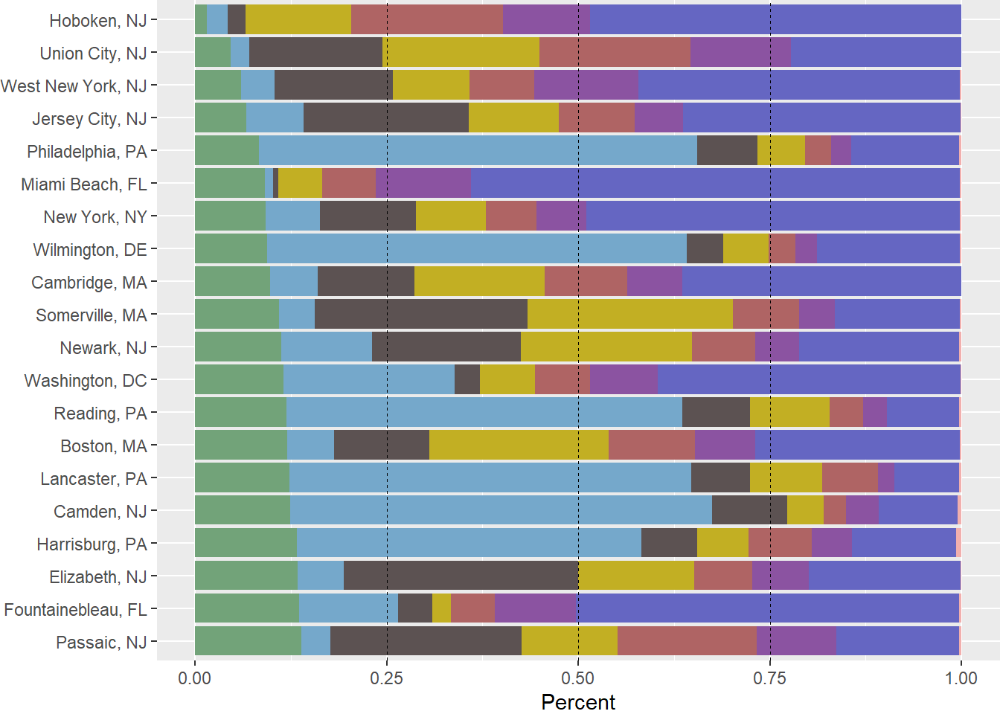
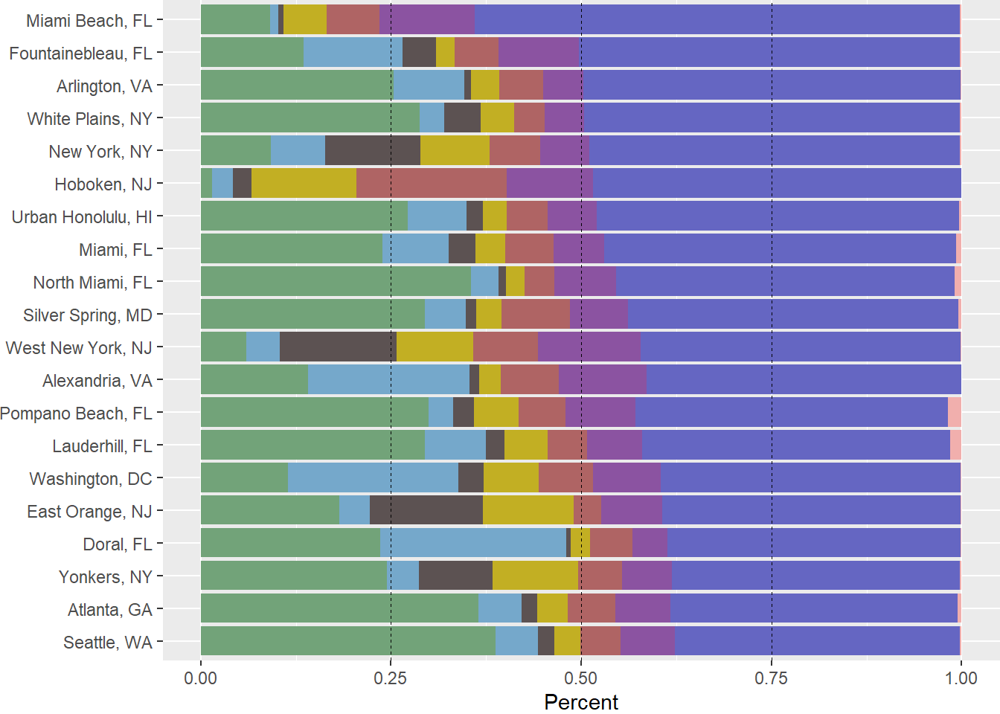
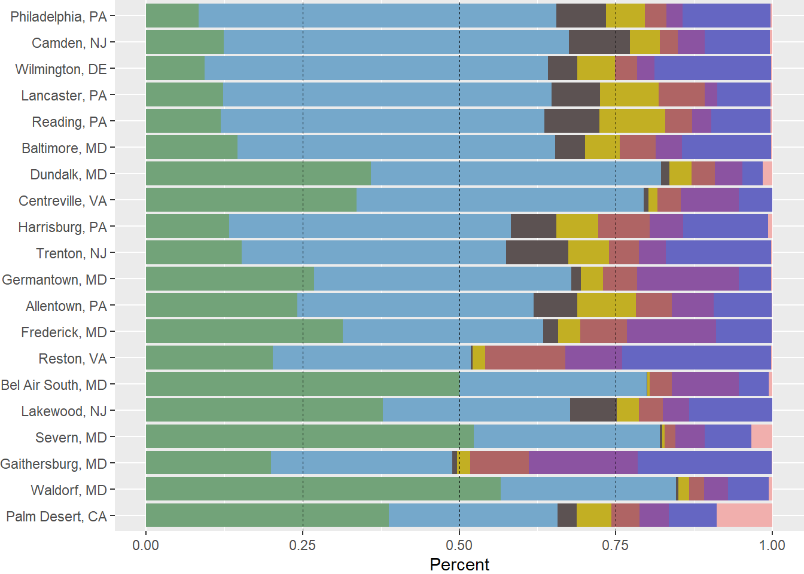
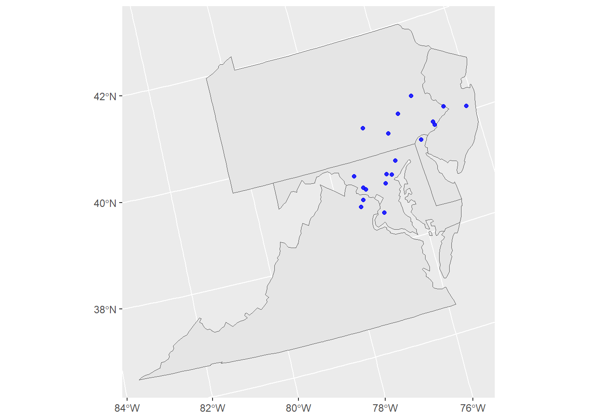
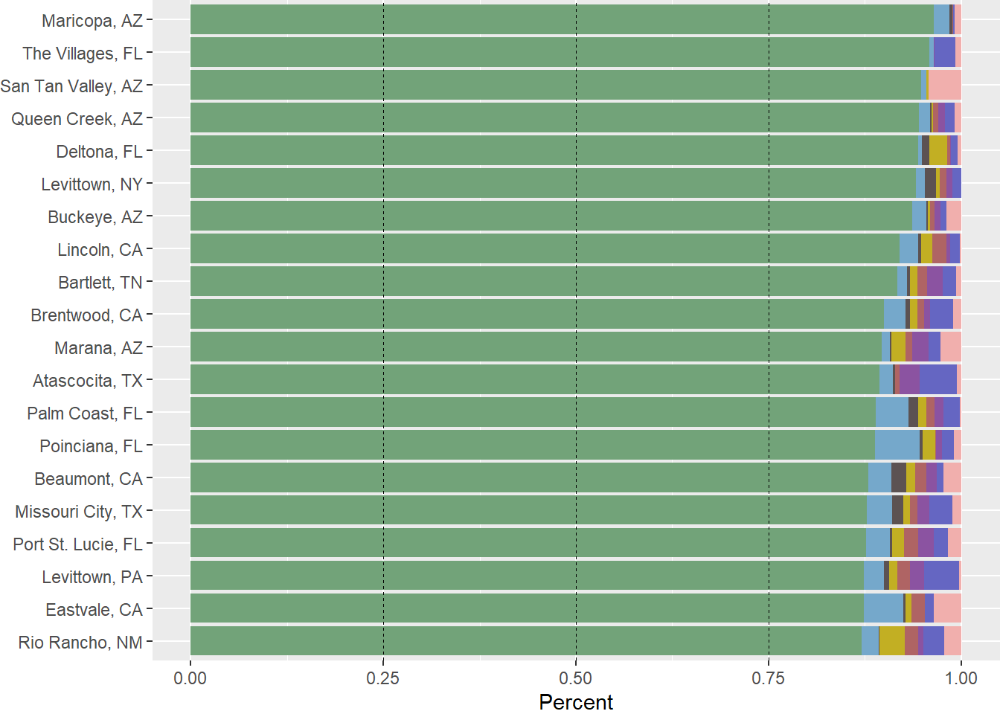
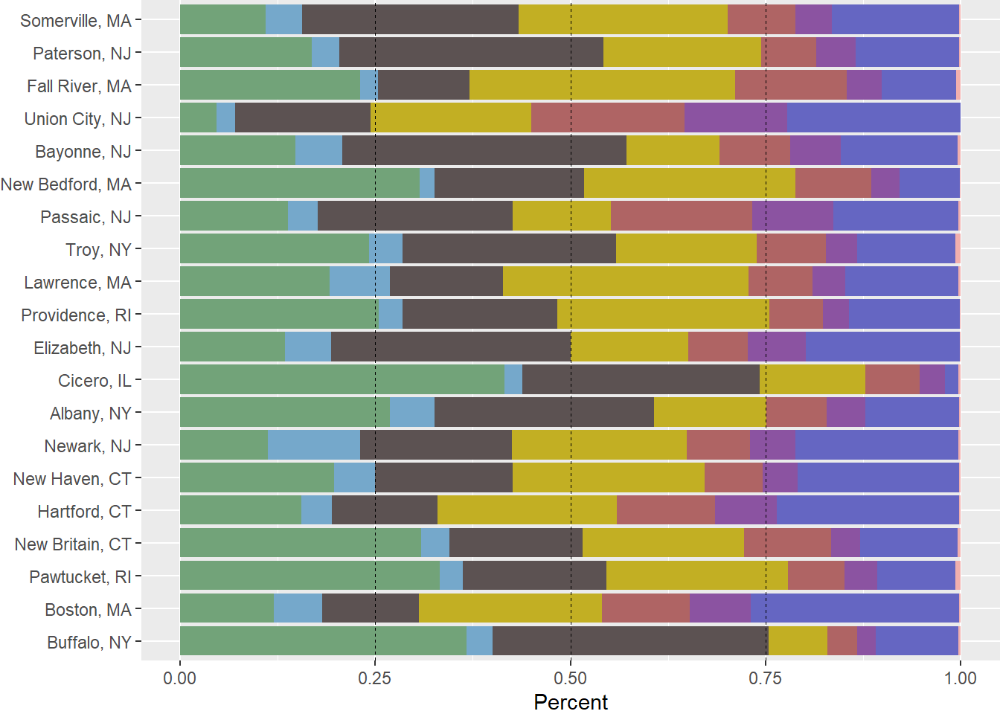
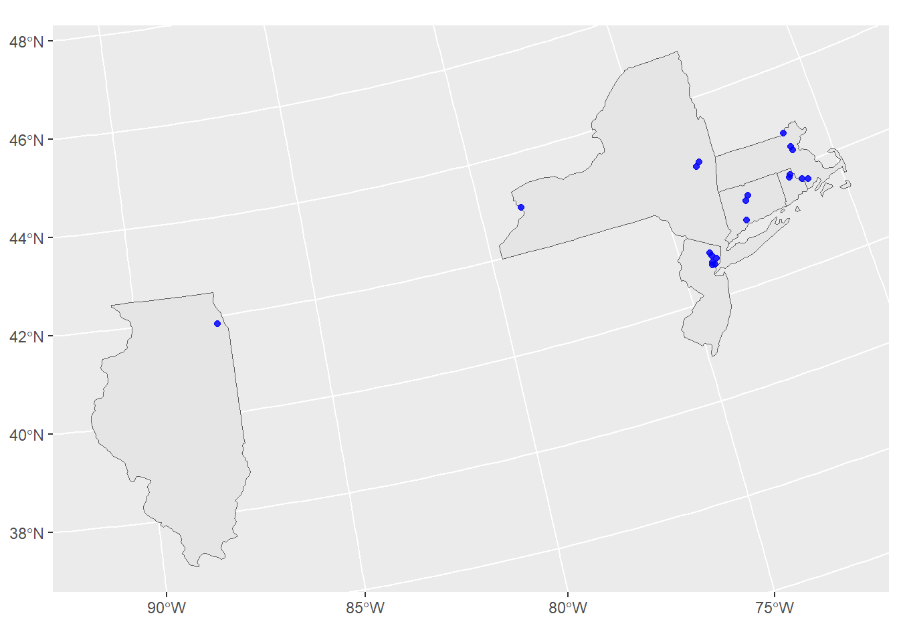
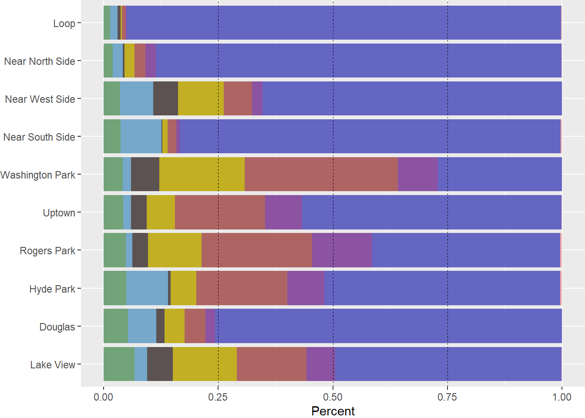
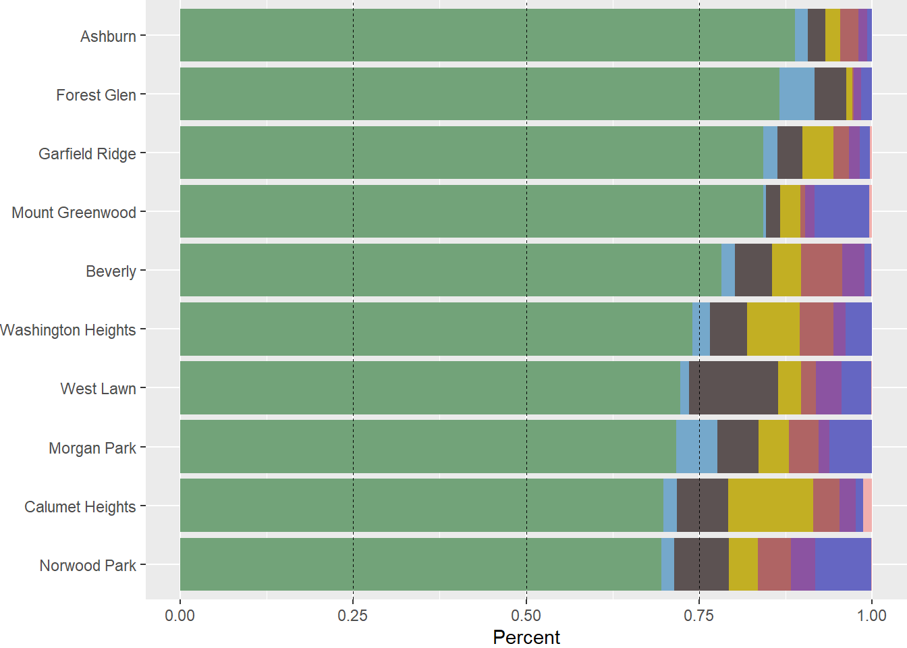
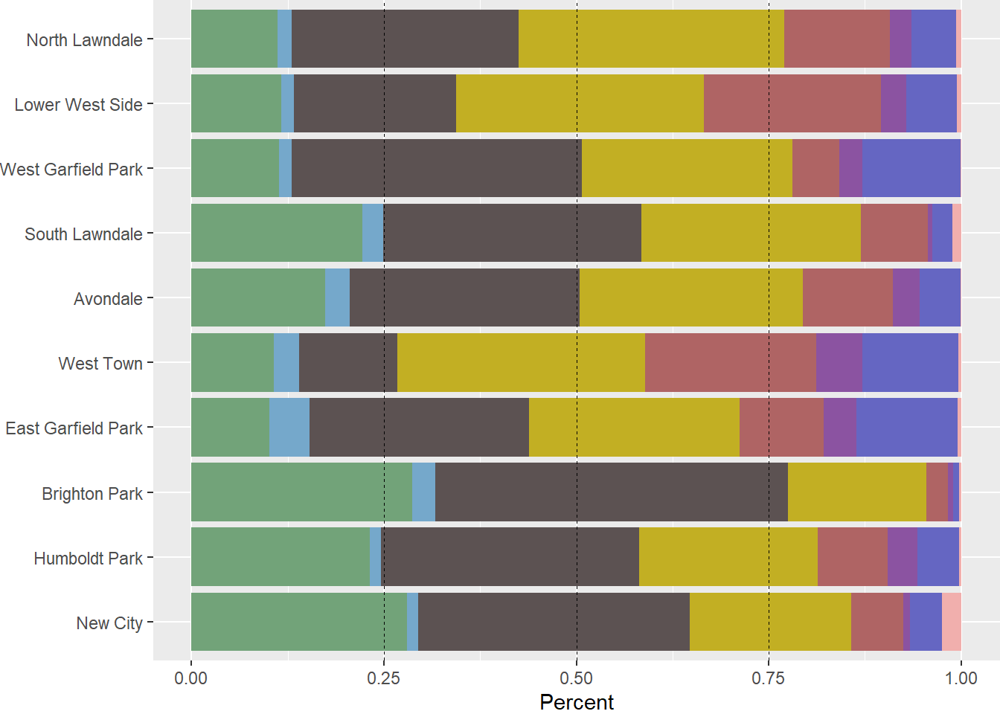

Housing by Occupied Unit Count
In September of 2015, the Washington Post analyzed census data to asses the breakdown of housing by unit count for major American cities. After reading that article, I had a lot of follow-up questions and interest in how other cities and housing types shook out.
First, the Washington Post analysis only included large U.S. cities. If we include cities down to 50,000 population, are there any that had a lower proportion of single-family detached housing than New York or Philadelphia?
All cities with the least single-family detached housing

As it turned out, yes, there are! They broadly fall into 2 categories:
Concentrated high density, such as New York and surroundings, Florida beachside communities with extensive condo development, and other urban centers like D.C. and Boston.
Philadelphia and surroundings, where single-family attached rowhouses were built as the default instead of single-family detached houses.
Just how geographically concentrated type 1 cities are into “major cities” and “Florida condo communities” becomes especially clear when sorted by the densest housing types:
All cities with the most high-density housing

Likewise, the rowhouse-dominated cities are a class of their own, almost exclusively falling in the mid-Atlantic:
All cities with the most single-family attached housing


All of the top 19 are located in this narrow region of the US, with only #20 being located elsewhere (Palm Desert, CA).
Finally, what about the opposite? Where do we find the cities with the most single-family detached housing?
All cities with the most single-family detached housing

It’s actually quite rare to find cities of over 50,000 people where over 90% of occupied units are single-family detached housing. Of those that are, several are planned communities such as The Villages or Levittowns that were explicitly intended to only contain single-family detached housing.
Urbanists frequently talk about a “missing middle” of housing: more dense than single-family housing but less so than mid-rise apartments:

What U.S. cities already have the highest proportion of this type of housing?
All cities with the most “missing-middle” housing


Older, mid-sized Northeastern cities, as it turns out. These are places in which the housing stock was mostly constructed before automobiles but also places that did not grow so large or dense that this housing got torn down and replaced with higher density.
However, there is quite a bit of variety within the context of a single “city”. Chicago, where I live, has some of the densest neighborhoods in America as well as neighborhoods that are practically suburbs.
The top 10 Chicago neighborhoods with the least single-family detached housing have less than the densest U.S. cities:
Chicago neighborhoods with the least single-family detached housing

While the top 10 neighborhoods with the most single-family detached housing compare favorably with suburban cities:
Chicago Neighborhoods with the most single-family detached housing

Chicago has an incredible array of housing diversity. If neither suburbs nor towers are to your liking, there’s an extensive amount of missing middle housing as well:
All cities with the most “missing-middle” housing

This research is an extension of the analysis performed in:
Badger, E., & Ingraham, C. (2015, September 21). “The most popular type of home in every major American city, charted” - The Washington Post. https://tinyurl.com/bdd2nx45